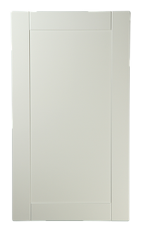
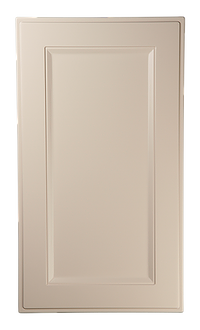
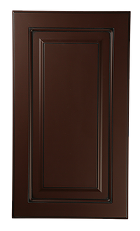
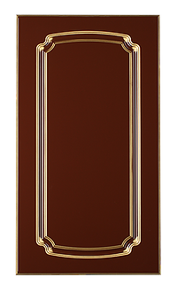
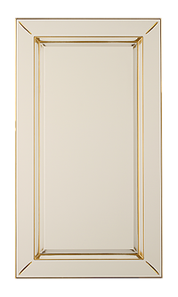
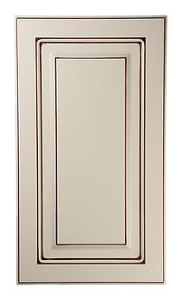
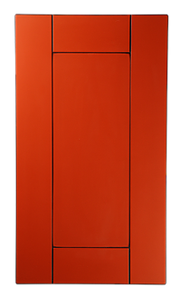
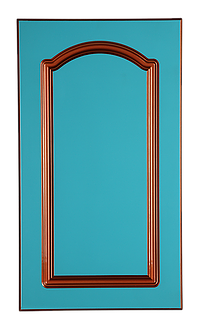

Изготовление фрезерованных фасадов
У нас вы можете заказать фрезерованные крашенные мебельные фасады из МДФ. Именно крашенные фасады набирают популярность у хозяев квартир и дизайнеров интерьера в последнее время, ведь только у вас теперь нет никаких ограничений по выбору цвета: только у каталога RAL, по которому мы подбираем цвета эмали, есть 700 стандартных вариантов цвета. Также мы используем и другие каталоги: NCS, WC.
Но основной нашей отличительной особенностью является возможность покраски фасада под ваш образец цвета! Это означает, что теперь вы буквально совсем не ограничены в выборе цвета крашенных фасадов. Вы можете принести любой образец и наши профессиональные маляры подберут подходящую эмаль для него.
8 плюсов заказа крашенных фасадов именно у нас:- Изготовление фасадов любых размеров. На нестандартные размеры мы не делаем никакой дополнительной наценки. Поэтому именно у нас вы можете заказать крашенные фасады для высоких нестандартных шкафов по цене производителя без наценок. Минимальный размер фасада 30х30 мм, максимальный: 2700х1100 мм.
- Большой выбор вариантов покраски: глубокий мат, полумат, высокий глянец с полировкой, металлик, кракелюр и любые другие специальные эффекты.
- Если вам нужно изготовление мебельных фасадов с высоким глянцем и полировкой, то у нас вы найдете лучшие варианты! Наши маляры отлично справляются с изготовлением полированных фасадов МДФ.
- Высококачественные лакокрасочные материалы.
- Мы используем эмали, патины и спецэффекты ведущих итальянских производителей: SayerLack, Renner, Milesi. Наша особенность в том, что мы красим лакокрасочными материалами на акриловой основе, благодаря чему фасады будут сохранять свой первоначальный цвет долгие годы.
- Собственное производство.
- Каждого порадует возможность обсудить детали изготовления фасадов и внести коррективы в форму и другие параметры мебельных деталей.
- Изготовление фрезерованных фасадов по вашему образцу или чертежу.
- Матовые фасады - от 4000 руб.
- Глянцевые фасады - от 6000 руб.
Примеры фрезерованных фасадов:







